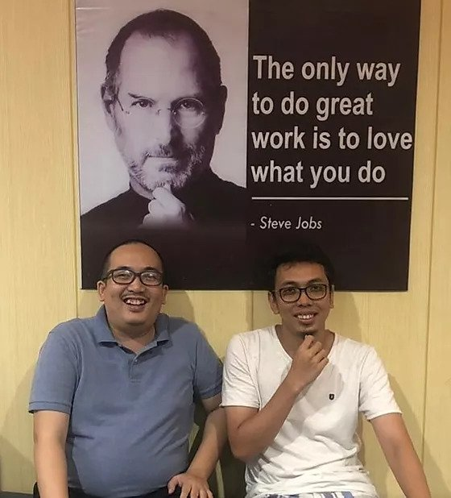

Adaptech merupakan akademi yang berfokus pada pembelajaran berpikir komputasi tanpa komputer, diinisiasi oleh dua putra daerah Sumatera Selatan, yaitu Sofian Hadiwijaya dan Irvan Putra.
Sofian memiliki pengalaman dan penghargaan di banyak industri, termasuk edukasi. Dia dianugerahi sebagai Developer Hero 2016. Salah satu kolaborasi dia adalah bersama Dicoding dan Developer Mengajar, menginspirasi ribuan developer Indonesia.
Irvan adalah pendorong dibukanya topik-topik pembelajaran enginnering untuk umum. Di waktu luang, dia membantu mengajar anak-anak usia dini untuk menemukan minat dan bakat mereka terhadap berpikir komputasi tanpa komputer.
Sebelum ada komputer elektronik istilah komputer adalah untuk para manusia yang bekerja melakukan komputasi, terkenal untuk peluncuran roket ke bulan.
Seiring waktu hal itu dilupakan. Untuk Indonesia, kita terlewat akan fondasi tersebut. Kami yakin, dengan kembali mengajarkan berpikir komputasi tanpa komputer, kita dapat berdikari di masa depan.
Terutama, daerah Sumatera Selatan memiliki potensi sebagai salah satu pasar yang besar di Indonesia, yang sebaiknya diperkuat oleh kita semua.
Graha Edukasi, Jl. MP. Mangkunegara No.5, Bukit Sangkal, Kec. Kalidoni, Kota Palembang, Sumatera Selatan 30114
Tel: 0822-825-12539
Formulir Pendaftaran